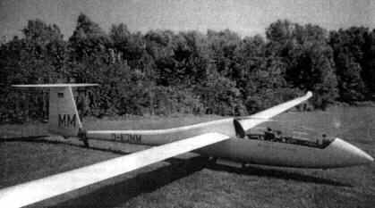
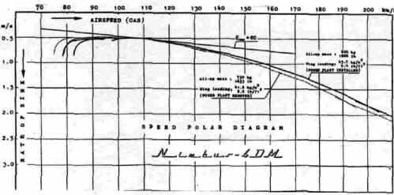
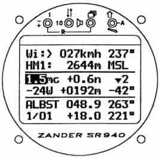
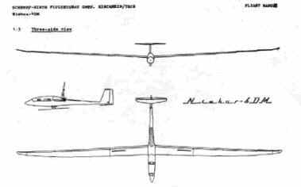
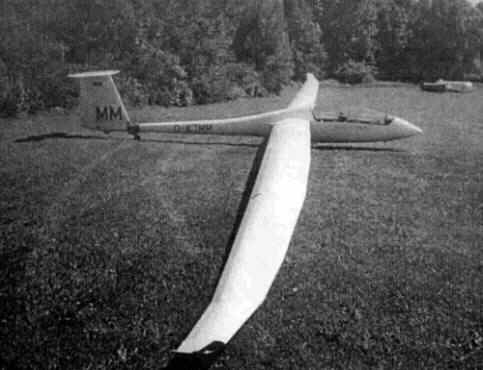

NIMBUS 4
DM
Impresiones de
vuelo y curso de vuelo en montaña
Por AIMAR MATTANO
Publicado en "Volovelismo Argentino" Nº 61 - Dic./Ene. 2001
El Nimbus4 DM
es la versión biplaza con motor de auto-despegue
del último diseño W clase Abierta de Klaus Holighaus. Su
envergadura en esta última variante es de 26,50m y su planeo máximo un
extraordinario 1:60 a 120 KPH!!. Es uno de esos planeadores que pertenecen a otro planeta,
no parece un simple velerito de 15m de ala, chiquito y flaco como son los modernos
standards o 15 m, a los cuales uno se sube con confianza y sin pensarlo mucho (y sin
estudiar mucho su Manual!).
Este nos
dice que su masa vacía es de unos 600 Kg. ( o sea más que el Cessna 172 cuatriplaza) y
su peso de despegue unos respetable 820 Kg. Y para mover desde el piso todos esos kilos,
dispone de un motor dos tiempos de 59 HP. Para mejor, este modelo que vamos a probar, es
una versión particular porque su propietario lo quiso equipado y certificado para vuelo
nocturno VFR, y entonces dispone de luces de navegación, faro strobe, luz de nariz
para aterrizaje, transponder, barras de alimentación eléctrica suplementaria (que se
pueden usar en paralelo o aisladas, con "barra caliente" para alimentación de
emergencia), luces de tablero, individuales a cada instrumento y de emergencia
general, adelante y en el panel trasero. Naturalmente son necesarios dos paneles de
fusibles para proteger tantos circuitos, muchas llaves de corte y transferencia de
energía.
Pero
no termina aquí. Este particular velero ha sido preparado para disponer de 20 hs. de
oxigeno, para sus dos pilotos!. Para ello la fábrica instaló un par de botellones extras
fijos en el fuselaje, por detrás del vano motor. La recarga y las válvulas de corte
están detrás del asiento trasero. Algo más?, Sí, tiene un tanque de combustible
adicional en el ala derecha, para tener más autonomía.
EL PROPIETARIO
Jean-Marie
Clement es su propietario. Es un francés clase 1944 ingeniero consultor de la industria
del papel. Reside en Milán y vuela en nuestro Club de Varese. De joven en su propio
país se destacó como piloto e integró una escuadra seleccionada y subvencionada por
la Federación francesa. Llegó a ganar un Campeonato Europeo, lo cual no es poco mérito.
Pero Jean
llegó hace años a la misma conclusión a la que arribó Olhmann y en nuestro país
Marcelo Martino. Ellos dicen que el vuelo en térmicas ha llegado a su máximo y ya no
se puede esperar mucho adelanto. El mejor vuelo térmico lo realizó el extraordinario
Holighaus en Sudáfrica (un lugar incomparable) volando el Nimbus 4 M (el mejor
velero del mundo) y consistió en un triángulo de 1400 Km.. Esa distancia ya ha sido
superada varias veces en los vuelos en onda por gente no tan capacitada o sin un planeador
especial, y en varias localidades del planeta. Y no solo en ondas se vuela más
rápido, el fundamento de las ondas es el viento y este puede soplar por días enteros,
mientras que las térmicas cesan cuando el sol declina, inexorablemente cada atardecer.
Creen que, poco a poco, los records se realizarán en ondas no en térmicas.
Evidentemente, es difícil no estar de acuerdo con ellos. Consecuente con este criterio,
Jean se ha hecho construir este Nimbus tan particular. Porque vuelos de mas de 1000 Km. ya
ha realizado bastantes, algunos partiendo de nuestro Club, con el Nimbus y con un Ventus
que poseía anteriormente. Ahora apunta a la meta de los 2000 Km. y mucho más si es
posible. Su lógica es sencilla: volar todo un día, a la noche mantenerse en una onda
estacionaria en una montaña propicia y al alba partir de nuevo. Si algo va mal, tiene
el motor para dirigirse a un aterrizaje nocturno VFR en algún aeródromo habilitado. Para
ello ya cuenta con la autorización del aeropuerto de Ginebra. También dispone de
las autorizaciones para el vuelo en niveles de aviones de línea. (Aunque en realidad
Ginebra lo ha autorizado hasta nivel 180 –5500 m- que es el nivel mínimo para los
aviones comerciales en esa zona de los Alpes). Dispone como dijimos de transponder a
bordo y este solo aparatito consume un montón de energía. Por ello está estudiando
ahora la posibilidad de instalar un generador simple, movido por una pequeña hélice,
tal como tenían los biplanos de los años treinta.
LOS ANDES ARGENTINOS
Encontramos
a
Jean
una tarde de verano y le comentamos los vuelos records realizados por Olhmann a fin de
año en San Martín. Sabia algo de los mismos (aunque no mucho) y responde: "A mi
también me gustaría ir a la Patagonia, hice construir este velero, solo para ese tipo de
vuelo! Y agrega, "el problema es la logística". Ya Ud. se imagina lo que
sigue: no pude menos que responder "Y, si querés, yo te organizo el
viaje...".
La
verdad es que yo no tenia ninguna pretensión y solo me conformaba con que el francés
pudiera realizar su sueño, pero nuestro amigo lo pensaba distinto y me dice:
"Pero Aimar, si quieres volar el Nimbus, tenés que entrenarte!" "Sentate adelante que te explico".

Planeador
que
iba
a visitar Los Andes en noviembre.
LOS VUELOS
Al
rato ya estaba el planeador en la pista, me pongo el paracaídas y me siento en el asiento
delantero, que es el más
importante porque muchos controles, especialmente aquellos del motor, no están
reproducidos atrás (me pregunto si este Señor sabrá lo que hace largándome adelante en
el primer vuelo en este pequeño monstruo). La rutina de la puesta en marcha es:
Aerofrenos abiertos para frenar la rueda, palanca toda atrás, Master on, Fuel on, Pitot y
estático en alternado en vez de tomar desde la cola (toma desde la trompa cuando el motor
funciona) Sacar el freno de hélice (que se había puesto para poder retraer el
motor), Dar tres inyecciones (en realidad es solo una pera de goma tipo motor marino),
magnetos (o bobinas mejor dicho) on, acelerador un cuarto abierto
y apretar el arranque.

Polar
del
Nimbus
4. A200
kph
tiene
31
de
planeo,
casi como la máxima del
PW5.
Arrancó
al primer intento. Se calienta a 3000 RPM durante un solo minuto, se
prueban
las dos bobinas y se decola. Se decola, pero la cosa no me pareció nada fácil, porque el
instructor insistió con que decolase con el ala por tierra a pesar de la existencia de
pilotos dispuestos a correr el ala. (En el ala hay pequeñas ruedas para facilitar esta
maniobra). Entonces, la palanca toda a la derecha para levantar el ala izquierda que
estaba por tierra y al mismo tiempo toda atrás para que no caiga de trompa (hay una
pequeña rueda en la trompa pero es más seguro con la cola baja) se da motor lentamente
(Para evitar precisamente que caiga de nariz). Yo pensaba, va ¿ser lindo acelerar
lentamente con un ala que se
arrastra
y tira para un costado. Pero el Nimbus 4 motovelero tiene un control de alerones soberbio
y ayudado por el efecto suelo enseguida el ala es tuvo nivelada. El flap se
posiciona
en cero o en -1 si hay viento cruzado.
Con
la aeronave controlada, se mira el indicador de revoluciones, si no
marca por los menos 6700
vueltas, se debe abortar el despegue. A unos 40 KPH se pasa a flap +2. Manteniendo toda
palanca atrás (!) se decola a unos 85 KPH. Best climb (mejor ascenso) es 95 KPH y F +2.
Las vueltas salen a 7200. y sube unos 2 m/s.

Pantalla
principal del
director
de
vuelo
Zander con GPS
VUELO DE PERFORMANCE
Hice
ya varios vuelos en el acorazado y la verdad es que cuando uno le toma la mano después
cuesta retornar a la cruda realidad de veleritos de 15m, sin motor confortante y
asegurante y sin instrumental de primera como por supuesto posee el Nimbus.
No
voy a aburrir al lector con el relato de ellos, en cambio es útil describir como un
experto y capaz campeón europeo controla un velero de 26 m y peso de 800 Kg. Para
aprender esto la posibilidad de compartir el vuelo y ver los pequeños detalles de guía
que ofrece un biplaza es irremplazable.
En
térmica usa flap a +1 y velocidad de 105 KPH y +2 si hay que escarpar mucho y tira
bastante palanca atrás. Siempre muy escarpado, más de lo normal de un velero más chico
( indudablemente con 105 indicados se corre el riesgo de no entrar en la térmica). Se
guía solo por el audio para el centrado sin mirar mucho el vario y como valores
considera más el promediador ajustado a 20 seg. Dice que la aguja que se mueve
constantemente no es de mucho valor (!). Trata de no cruzar nunca los controles y si yo
aplicaba contraaleron en un viraje muy escarpado empezaba a los gritos (aunque fuese
poquito contraaleron!). El Nimbus es coordinado y bastante rápido para su enorme
tamaño; lo que no se puede hacer es cambiar de viraje, o sea virando a la izquierda
invertir a la derecha, porque volando a 105 y con el tiempo de cambio de viraje -unos 7
seg.- perderíamos totalmente la térmica. El timón tiene mucha autoridad y usando todo
a fondo se puede centrar bastante bien cualquier ascenso.

Tres
vistas. Envergadura de 26,50 m.
En planeo usa
una banda de silencio en el audio pero sigue a muerte sus indicaciones, no con llamadas
violentas pero si con cambio instantáneo de la actitud del fuselaje, las pequeñas
correcciones quedarían dentro de esta zona de silencio o sea que no las corrige. En
cambio mira continuamente la aguja indicadora de masa de aire, el Netto. Si la masa
desciende más de 1 m/s ya comienza a corregir trayectoria hacia un lado u otro. (Pero en
montaña es distinto, ahí vira hacia el viento buscando la onda ascendente). Tiene
siempre en pantalla información de viento, que entre montañas puede cambiar bastante. La
velocidad de máximo planeo es a 120 KPH, con 1 m de comando de velocidad o sollfarht ya
estábamos en 150/160 KPH, y como las ascendentes ondulatorias que aprovechábamos no
superaban el 1 m/s
no pasábamos de allí. Aquí tengo que aclarar que Jean era capaz de encontrar ondas
ascendentes con solo 15 KPH de viento!. Según él, basta muy poco para que se produzcan,
dice que prácticamente siempre que hay un obstáculo habrá detrás del mismo una onda
atmosférica, que pueden arrancar muy por debajo de la cima de la montaña productora. Y
lo que afirma no son teorías, él lo puede demostrar con sus vuelos. Y también dice que
invierno o verano es lo mismo, basta con que sople el viento y ya tendremos ondas en las
montañas. En verano después del pasaje de un frente frío, cuando sopla un viento
regular del NW, decola muy temprano, casi al alba, y vuela en ondas hasta que el sol
comienza a producir térmicas. A partir de allí hace un vuelo combinado y al
atardecer vuelve a avanzar solo con las ondas. Aterriza casi a la puesta del sol. Así
realizó un vuelo de 1009 Km. en yo-yo el 18 de marzo de este año, que piensa ha sido el
primer 1000 del milenio, aunque las condiciones distaban bastante de ser la óptimas.
(No había térmicas y el viento era muy cambiante).
VUELO EN MONTAÑA
Volando
en montaña, tiene un ojo continuamente atento a la dirección del viento. Toma como
indicios el movimiento de las hojas de árboles en las laderas, la ondulación de las
aguas de los lagos, cualquier humo en superficie, hasta el peinado de las nubes le
sirven para deducir el viento. Tiene también naturalmente el último modelo de Director
de vuelo, un Zander 940 conectado con la brújula magnética que le permite saber el
viento aun en planeo (sabemos que en viraje cualquier GPS FR con pantalla entrega esos
datos). Con poco viento, menos de 15 KPH, los datos no son muy precisos.
Y busca
la onda en todos lados, si donde piensa que se encuentra inicialmente no da resultados la
busca aun en el centro del valle. Casi siempre en esos vuelos encontrábamos unos
cúmulos bajos, a la altura de las crestas, de aspecto desgarrado y sin bordes
definidos. Esos son tracto-cúmulos, nos dice, y casi siempre son rotores (o sea no nubes
convectivas, sino producidas por una corriente ondulatoria). Se los vuela como si fuese
una ladera, o sea haciendo ochos por delante del
mismo, aún estando por debajo de ellos, volábamos siempre por delante de las babas. No
había la más mínima turbulencia (el viento era escaso). (Según Olhmann estando un
poco bajo conviene tomar como referencias geográficas a estos rotores y no a las nubes
lenticulares ya que por su considerable altura será mas difícil para situarse con
respecto a las ondas). Comenzado el ascenso ondulatorio, no hacíamos ochos o cosas
raras sino que virábamos bien escarpaditos en el punto de mejor ascenso. Con una
diferencia, cada dos o tres virajes volvíamos viento arriba hacia el punto inicial.
"Estas no son térmicas Aimar, son ondas que no se desplazan mientras que a ti te
lleva el viento! " Me gritaba para señalar mis errores. De esa manera llegamos un
par de veces a nivel 170 (unos 5000 m) limitados con el Control de Ginebra. (Y esa es
otra de las grandes limitaciones para los grandes vuelos de distancia en onda en los
Alpes, las restricciones de tránsito aéreo.)

26,50
m
de ala.
Obsérvese
la
luz de verde de punta de ala derecha, en el timón está la blanca
PLANEOS
Estábamos
altos, pero las grandes montañas siempre parecen vecinas. En los planeos se debe seguir
la "Línea de mayor energía". Vale decir, ir siguiendo las crestas de las
cadenas, nunca cortar directamente por los valles, esa es una de las razones por la cual
el promedio de vuelo en las montañas no es muy elevado. Jean se guiaba por el
sollfarht pero también por el netto, si este comenzada a caer, viraba unos 30º
de rumbo.
Naturalmente el Nimbus 4, que a 150 KPH tiene un planeo de 46, parece mucho más un
avión que un planeador y no era difícil avanzar sin virar. Llegábamos a la vertical
del Club con mucha altura y aun con todo freno afuera costaba perderla. Cuando sugerí
bajar el tren para aumentar la resistencia respondió que él tenia una disciplina de la
cual nunca se apartaba, el tren lo baja en pierna inicial. Siempre lo hace así. Punto. Ya
muy bajos, iniciamos el circuito. Tren abajo en inicial, flap a 1, 105 la velocidad y
regular la altura con los aerofrenos. Solo después del viraje para final, me permite
poner todo flap. Posición L (landing, o landung en alemán). En realidad, los
aerofrenos también parcialmente arrastran los flaps a una posición positiva
contribuyendo a la resistencia (la interconexión de comandos debe ser una obra maestra
de mecánica). Al seleccionar flap a L el centro de presión se corre hacia atrás y se
produce una caída de nariz, muy conveniente porque también hay que picar para mantener
esa velocidad de 105. Picando y apuntando a la cabecera de pista con todo frenos afuera se
le aterriza con toda facilidad y el poderoso freno hidráulico de rueda hace el resto. Hay
mucha inercia que disipar pero teniéndole la mano se lo para en el mismo espacio de un
Cirrus (que por lo general ya ni frenos tienen, pero a nadie le preocupa). Importante es
recordar llevar flap a cero o -1 para recuperar alerones y toda palanca atrás si se frena
con energía.
RESUMEN DE LOS VUELOS
El Nimbus 4
biplaza y con motor tiene una características de vuelo y una performance
tan distintas a los veleros "tradicionales", 15 ó 20m que sean,
que no se los puede comparar. En un día bueno de llanura con 3 m/s de térmica la
velocidad óptima de planeo es de unos 200 KPH y la masa o mejor dicho el peso es tan
alto que una llamada decidida nos coloca de nuevo junto a la nube sin necesidad casi de
virar. Y también debido al peso la aceleración pos térmica es instantánea. De
alerones no es tan lento y ayudándolo con bastante timón, aunque no sea una maniobra
coordinada, se lo puede acomodar bastante bien. Hay que escarpar bastante pero no
resulta fastidioso. Para el planeo final resulta indispensable un buen calculador y
mentalizarse para hacer 100 km con 1500m de altura a velocidad elevada, si podemos extraer
algo de energía de la atmósfera bajo los cúmulos. Otra cosa importante en la cual yo no
había pensado me la describió Jean-Marie. Hay planeadores aptos para volar en
térmicas y campeonatos tradicionales pero que no sirven para la onda. Para este vuelo
hay que pensar en muchas horas de estar sentados inmóviles, con temperaturas muy bajas,
usando oxígeno, haciendo las necesidades fisiológicas, comiendo y bebiendo en
proporción a la duración del vuelo, llevando equipo pesado (baterías, oxi,
instrumentos,) etc. Para ello hace falta un fuselaje ancho y confortable y biplaza si es
posible, para compartir los esfuerzos. Dice que el ASH 25 es muy incómodo y que como el Nimbus
no hay otro. Piensa que en el futuro próximo se diseñaran veleros especialmente
preparados para volar e onda. (Un poco el concepto de "amigable" que describe
Crego para su VECTOR).
VIAJE A ARGENTINA
Comencé a
preparar la logística del viaje a San Martín de las Ondas (de los Andes!) pero por
varias razones este año no será posible. No está cancelada, pero si demorada un año.
Una lástima porque Jean es un piloto de los mejores del mundo para el vuelo en onda y nos
podría haber ayudado mucho. Suele dar conferencias sobre estos vuelos y tiene preparado
videos y diapositivas al respecto. Su Nimbus biplaza es la herramienta ideal para ver en
directa como se mueve uno que de la cosa sabe bastante. Será el año próximo !!.
INVITACIÓN
Después de
estos vuelos me he dado cuenta que pretender aprender todas estas cosas en forma personal,
sin ayuda, sin nadie que nos guíe, es una pérdida de tiempo ( y un posible riesgo)
enorme. Debe llevar años aprender sin ayuda, y quien puede afrontar esto?. Lo ideal seria
traer aquí a las montañas a uno de estos pilotos conocedores y que él nos guíe, tal
como hace Olhmann en su escuela de Serres. El viaje y su estadía lo podrían pagar
entre todos los participantes, y el lugar hasta podría ser una hermosa ciudad como
Bariloche, para que toda la flia. lo disfrute. (Estudiando estos vuelos vemos que en el
Cordón de Sierra de la Ventana, a unos 12 km del Club de planeadores o del aeropuerto,
siempre se ha hallado buen ascenso ondulatorio, y también hacia el norte, sobre Villa
Lanquin).
Otra
variante atractiva y rápida es ir a aprender directamente a la escuela de Olhmann.
Yendo sin
FINAL
Estos pioneros
tienen razón, el próximo paso del gran vuelo a vela se realizará volando en ondas. Y es
casi seguro que los Andes argentinos es el mejor lugar del planeta. Nosotros aun no
comprendemos todo lo que esto implica, aun para la vida cotidiana de los Clubes, aun para
la supervivencia de nuestra actividad. Paciencia, poco a poco iremos tomando conciencia.
Las ondas han estado allí desde la creación del mundo y nos esperaran unos años más.
Con
respecto al Nimbus 4, es apabullante la primera visión de su cabina llena de
instrumentos y paneles de circuít-breakers. Decididamente hay que estudiar su Manual
antes de hacer el primer vuelo y luego usar la lista de inspección para la puesta en
marcha. En cambio, en vuelo es bastante sencillo y al alcance de cualquiera. Es muy
tranquilo y amortiguado y no cansa en vuelos largos. Es ideal para grandes vuelos en
nuestras pampas y también precisamente para estos vuelos en ondas. En cambio para
campeonatos, especialmente los nuestros, preferiría algo más práctico y fácil de armar
y maniobrar en tierra tipo un l8 m, la nueva clase que ahora está de moda en Eurolandia.
Ojalá pueda Jean-Marie Clement viajar a nuestro país el año próximo con su muy
especial velero porque seria una ocasión para todos nosotros de aprender aprovechando su
experiencia. VA (Volovelismo Argentino)